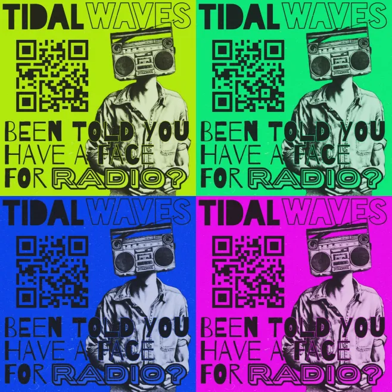
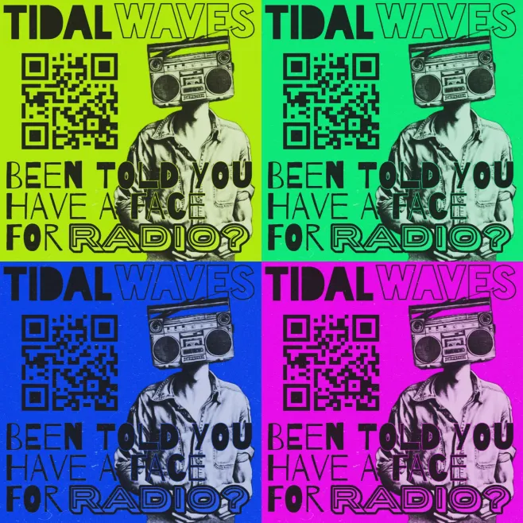
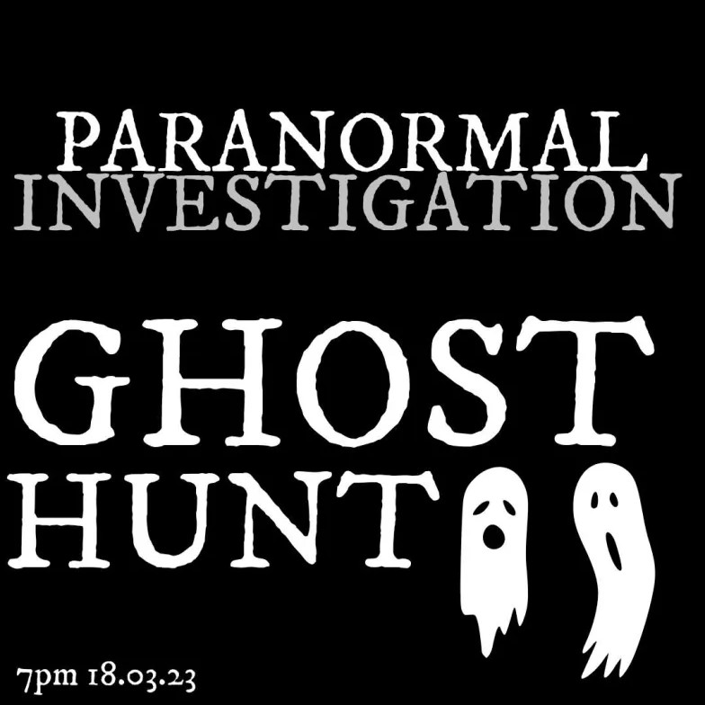
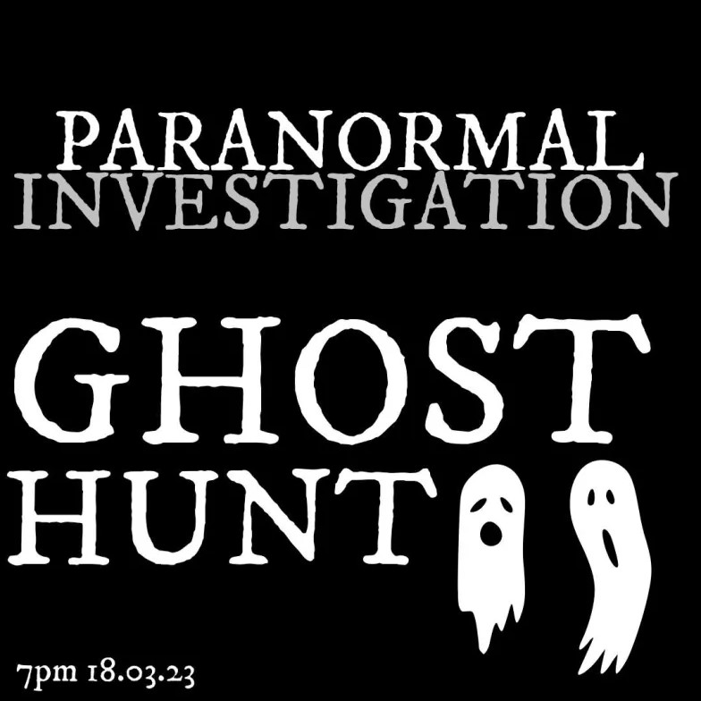
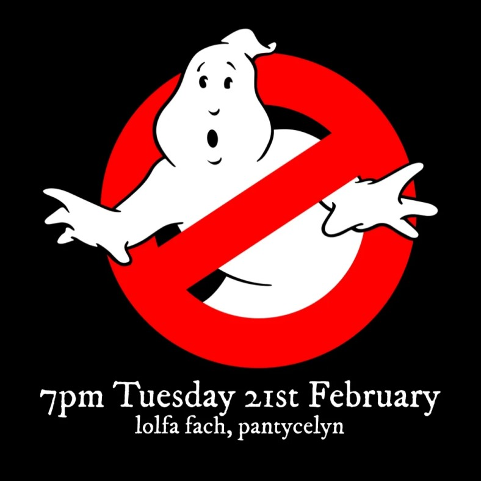
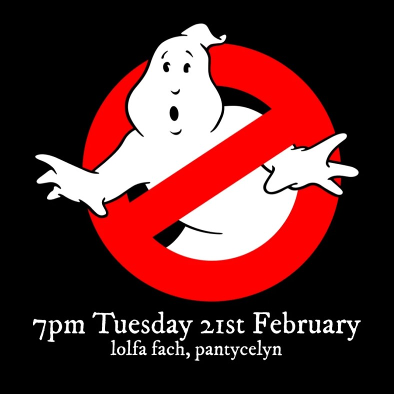

Amelie Commins
Hello! I am a marketing and media-focused graduate with three years of experience delivering content-led campaigns for student organisations and small businesses. My work spans email marketing, social media, video content, and events, with a consistent focus on audience engagement and brand visibility.

Across roles, my campaigns have delivered measurable results, including consistent digital content reaching 1,000+ views per post and one viral Instagram Reel with 185,000 views, as well as an average 65 percent increase in event attendance. I work across planning and execution, using tools such as Canva, Adobe Creative Suite, Omnisend, and Google Analytics to turn ideas into performance.
When I'm not marketing, I'm experimenting with front-end web projects in HTML/CSS and JavaScript to better understand how design, UX, and development can make digital campaigns even stronger. Check out my latest project here!Amaranth: Digital Marketing
(2025 September – Present)
Delivered B2C email campaigns to an opt in audience of 4,500+ customers using Omnisend. Subject line testing and send time optimisation contributed to a 34 percent average open rate.
Analysed engagement data, click heatmaps, and unsubscribe trends to refine content hierarchy, CTA placement, and link structure.
Supported social media content creation and short form video editing, evaluating performance through TikTok and Meta analytics.
Assisted with website updates and content management using Shopify.
Sample Work
Instagram Reel and Newsletters.
.png)
.png)
.png)
Tidal Waves Radio: Secretary & Scheduling
(2024 May – 2025 June)
Co founded and managed a volunteer led radio station with 60+ contributors, overseeing recruitment, onboarding, scheduling, and internal communication. Set up a society Newsletter using Canva and Mailchimp, which reached 80+ students each month.
Planned and delivered online and offline promotional campaigns, including social content, posters, and in person outreach.
Produced and edited Instagram video content, achieving an average of 800 views per post through consistent formatting and performance review.
Coordinated events, sponsorship communication, and advertising schedules to support station growth and visibility.
Sample Work
Graphic designs (used online & offline), Newsletter and Instagram Reels.

 


.png)
.png)
.png)
.jpg)
Aberystwyth Dog Society: Social Media
(2023 November – 2024 April)
Managed the organisation's Instagram account, shifting content focus from static posts to Reels to increase reach and engagement. Typical posts reached four-figure view counts, including one viral Reel with 185k views.
Planned and executed Reel-led campaigns to promote events and initiatives, contributing to an over 65 percent increase in attendance through targeted social promotion.
Monitored analytics and audience interaction to refine content strategy, maintain engagement, and inform ongoing campaign decisions.
Sample Work
Instagram Reels.
.png)
.png)
.png)
.png)
Aberystwyth Paranormal Society: President
(2022 August – 2024 January)
Grew membership by 50+ students through targeted outreach campaigns across Instagram, Discord, Facebook groups, and direct WhatsApp messaging. Coordinated weekly events, volunteer teams, and messaging across channels, boosting attendance from 10 to 100+ participants.
Managed a £500+ budget using Excel, optimising promotional spend to maximise attendance and engagement.
Sample Work
Graphic designs published to Instagram, Discord, and Whatsapp.
 

 

Skills
- Marketing & Advertising
SEO, Google Ads (Search Certified), Email Marketing (Omnisend, Mailchimp, Klaviyo), Shopify, Social Media Marketing (Instagram, Facebook, TikTok, WhatsApp) - Creative & Design
CapCut, Canva, Adobe Creative Suite, Avid Media Composer, DaVinci Resolve, Figma - Productivity & Analytics
MS Office (including Excel and Outlook), Google Workspace, Google Analytics, Trello - Web & Development
WordPress, HTML/CSS, JavaScript, GitHub, Visual Studio Code, UX fundamentals - Event & Project Management
Volunteer coordination, Event planning, Scheduling, Budget management
Certificates
- MadLab: Shift Click – Introduction to Web Development, December 2025
- Google Skillshop: Google Ads Search Certification, October 2025
- Google Digital Garage: Fundamentals of Digital Marketing, July 2025
- Aberystwyth University: Editing and Shaping your Work CQFW Level 3, April 2025
- LinkedIn Learning: Learning Graphic Design History, April 2025
Publications & Editorial Work
Alongside marketing, I have experience in editorial and journalistic writing, including published articles, creative work, and editorial support for student and literary publications. This background informs my approach to messaging, narrative, and clarity.
- Author, 'About the King's Beautiful Daughter,' in Crossroads, Aberystwyth 2025 Creative Writing MA anthology
- Co-editor & Author, 'Ode to a Lovely Spring,' in Aberystwyth Publishing Society 2025 Anthology
- Co-editor, 'Spiralling,' in AberInk Summer 2025, Aberystwyth English & Creative Writing Society journal
- Reviewer, 'Tidal Waves Makes Some Noise,' in Mouth of Ystwyth, Issue 4 (Nov 2024), Aberystwyth University Student Newspaper
- Reviewer, 'The Three Musketeers: Shakespeare Meets Netflix,' in Mouth of Ystwyth, Issue 3 (Nov 2024), Aberystwyth University Student Newspaper
- Proofreader, 'Beyond Horizons,' in AberInk Summer 2024, Aberystwyth English & Creative Writing Society journal
Education
Aberstwyth University: BA, Film and Television
(2022 September – 2025 June)
Grade: First Class
Academic training focused on media production, audience analysis, and narrative effectiveness have informed my approach to content marketing and campaign evaluation.
Contact Me
.png)